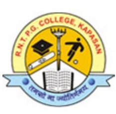
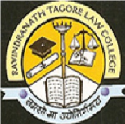
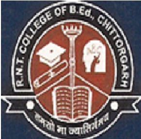
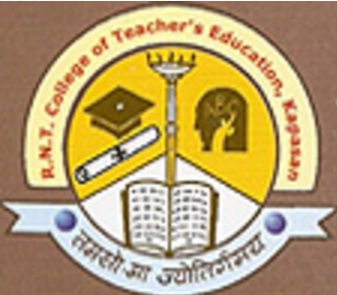
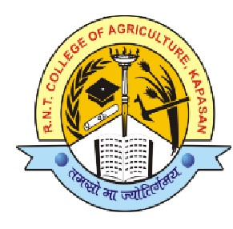
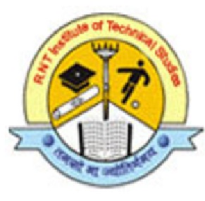

Ravindra Nath Tagore P.G.College
Near MataJi Temple, Highway Road, Th. Kapasan
Distt. Chittorgarh (Raj )
COLLEGES AND AFFILIATON
R.N.T. Colleges (Under Deeksha Creations Society ) at Kapasan & Chittorgarh , is one of the leading college of Rajasthan and has been inthe fore front in the advancement of Computers(B.C.A, P.G.D.C.A. and M.Sc (I.T)), Arts (B.A. & M.A), Commerce (B.Com & M.Com),
Science (B.Sc), Law and B.Ed education what makes us importance is our youthful zest and enthusiasm to continuously reach new benchmarks.
Our Recognization & Affiliations are as follows:-
DEEKSHA CREATIONS SOCIETY-COLLEGES AND THEIR AFFILIATIONS
|  R.N.T. P.G. COLLEGE ESTD. 2002-03 Station-Highway Road, KAPASAN,
|
|  R.N.T. LAW COLLEGE ESTD. 2003-04 Gandhi Nagar, CHITTORGARH (Rajasthan)
|
|  R.N.T. COLLEGE OF B.Ed. ESTD. 2006-07 Gandhi Nagar, CHITTORGARH (Rajasthan)
|
|  R.N.T. COLLEGE OF TEACHER EDUCATION(GIRLS) ESTD. 2007-08 Highway Road, Near Mataji Temple, KAPASAN
|
R.N.T. Institute of B.S.T.C. Highway Road, Near Mataji Temple, KAPASAN
|
R.N.T. COLLEGE OF TEACHER EDUCATION(S.S.) Highway Road, Near Mataji Temple, KAPASAN
|
R.N.T. GIRLS SCHOOL OF B.S.T.C Highway Road, Near Mataji Temple, KAPASAN
|
R.N.T. COLLEGE OF B.S.T.C., CHITTORGARH Gandhi Nagar, CHITTORGARH (Rajasthan)
|
|  RNT COLLEGE OF AGRICULTURE ESTD. 2014-15 Highway Road, Near Mataji Temple, KAPASAN
|
|  RNT INSTITUTE OF TECHNICAL STUDIES ESTD. 2013-14 Highway Road, Near Mataji Temple, KAPASAN
|